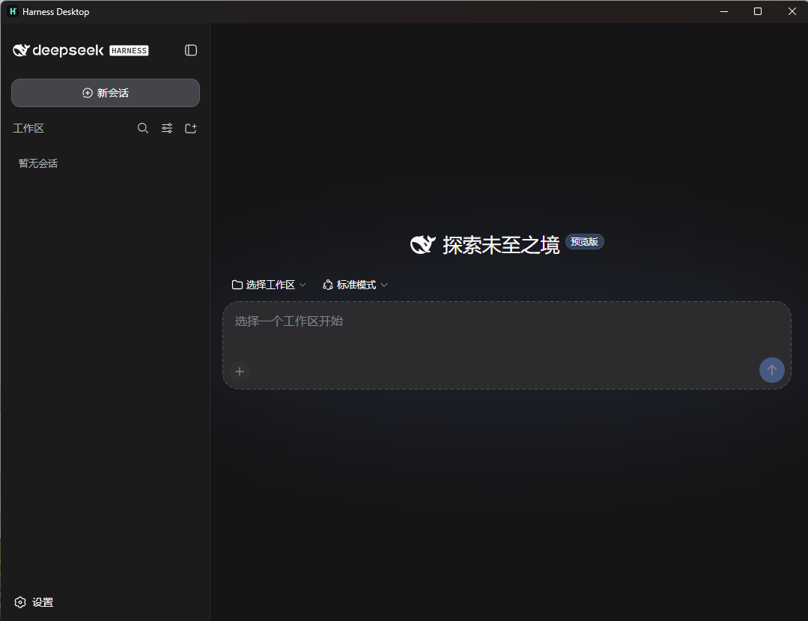
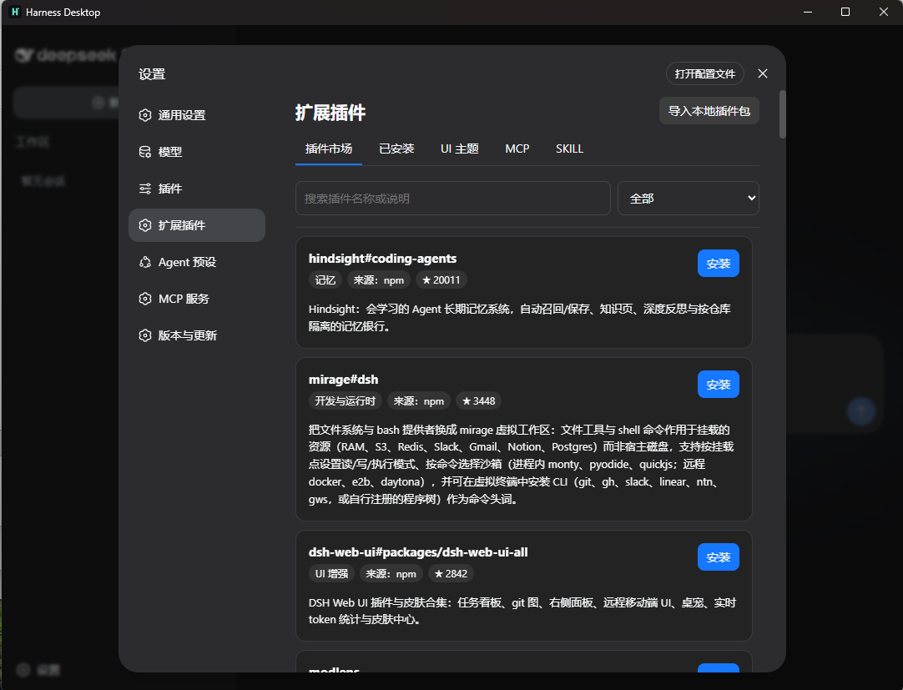
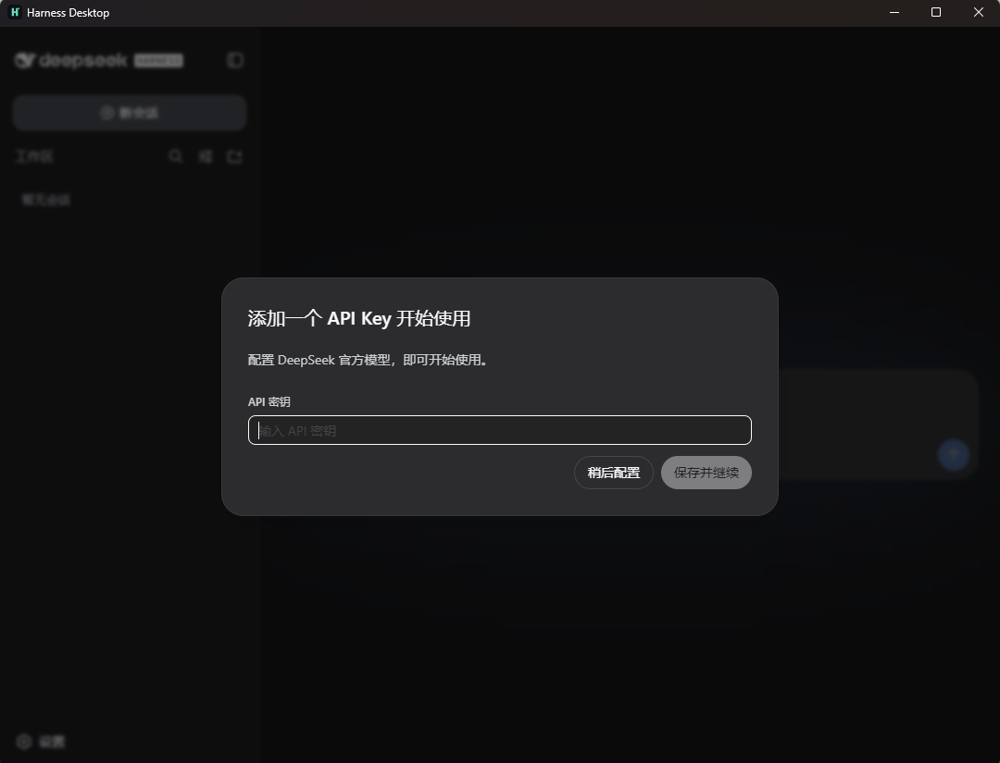
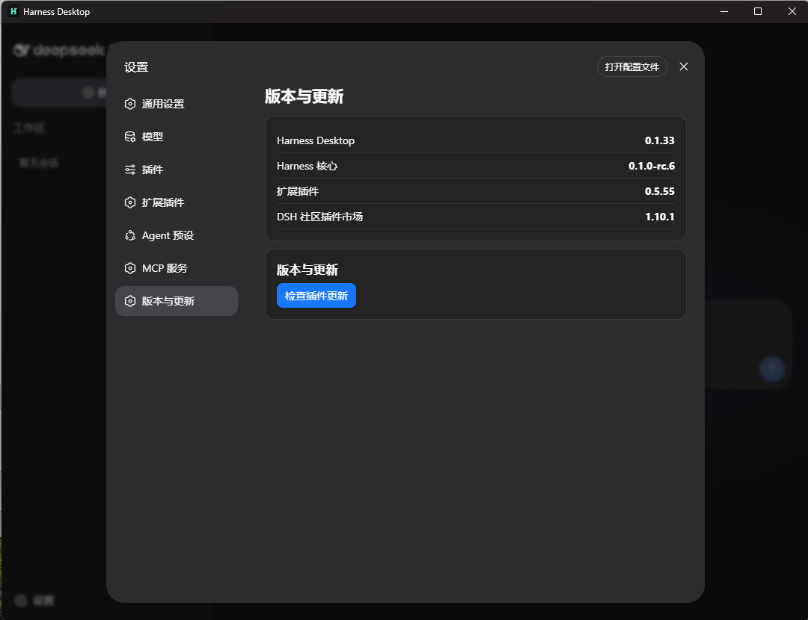

🧰
随包运行时
Windows 安装包包含运行 Harness 所需的环境；Desktop 负责启动和管理本机回环工作台。
Harness Desktop 在本机运行官方 Harness 内核，并加入中文扩展插件、集成式插件市场和本地化设置体验。它不替换官方 Agent、CLI、SDK 或协议。
目标是减少中文用户使用 Harness 的门槛，同时把运行时、工作区、插件和更新控制留在本机。
Windows 安装包包含运行 Harness 所需的环境；Desktop 负责启动和管理本机回环工作台。
将权限、常用设置和插件说明映射为中文，后端仍使用官方原始插件与配置，不改变调用标识。
在“扩展插件”中浏览、搜索、安装、停用、更新和卸载社区插件；市场能力来自 dsh-market。
提供 MCP 配置入口，并按插件、UI 主题、MCP、SKILL 分类整理已安装内容，降低配置复杂度。
会话、工作区和凭据留在本机。市场展示来源、收藏量与安全提示，安装前由用户自行判断风险。
统一检查 Desktop、Harness 内核与第三方插件更新；Desktop 更新通过签名安装包分发，内核更新支持校验后切换。
适用于 Windows 10/11（x64）。安装包约 140 MB，首次启动会准备本机 Harness 工作台。若网络无法直连 GitHub，可使用下方第三方代理下载。
gh-proxy 为第三方 GitHub 代理，与本项目无隶属关系；其即时可用性由服务商决定。代理无法打开时，请使用 GitHub 直连或 Release 页面中的其他资产。
Release 同时提供签名文件与 SHA-256 校验清单；下载来源与版本都能在 GitHub Release 页面复核。
以下截图来自 Harness Desktop 当前版本的实际工作台与设置页面。




Desktop 不 fork 或修改 Harness 的 Agent loop、工具协议和会话格式；其他 AI 工具仍应通过官方 Python SDK、CLI、Headless 或 ACP（以官方支持范围为准）与同一运行时协作。
插件市场能力集成自 dsh-market。社区插件可能访问文件、网络或外部服务，请在安装前阅读市场说明并自行评估。